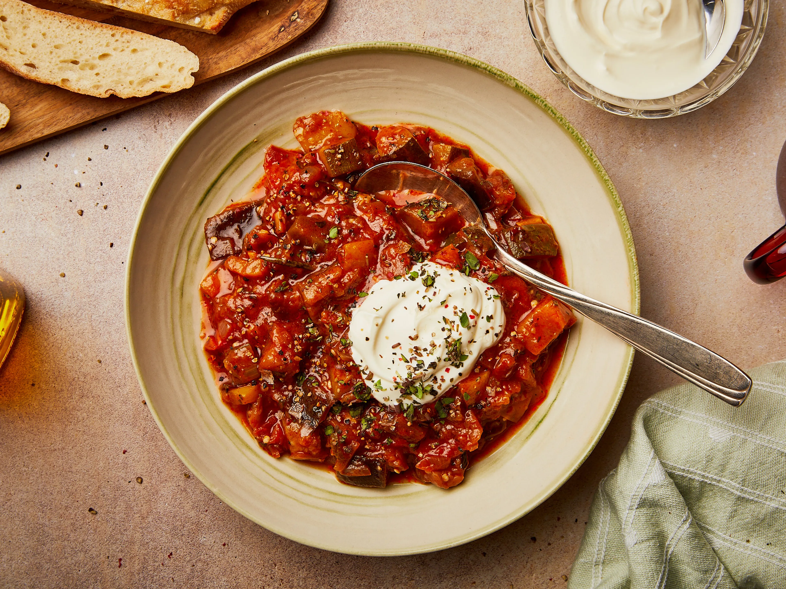

What is Ratatouille?

Ratatouille is a French Provencal dish that consists of
stewed vegetables. Though recipes and ingredients vary,
there are some ingredients that are almost always used:
eggplant, tomatoes, zucchini, onions, and bell peppers.
Ingredients
Wondering what is in ratatouille? Here are the ingredients
you’ll need to make this classic French dish at home:
- Garlic and oil: This flavorful ratatouille
recipe starts with fresh garlic cooked in olive oil.
- Produce: You’ll need an eggplant two zucchini two tomatoes fresh mushrooms
an onion and a red or green bell pepper.
- Seasonings: Season the ratatouille with dried parsley and salt.
- Parmesan: A cup of grated Parmesan cheese takes the ratatouille’s flavor up a notch.
How to Make Ratatouille
You’ll find the full, step-by-step recipe below — but here’s a brief overview
of what you can expect when you make homemade ratatouille:
- In a skillet, cook the garlic in olive oil. Add the eggplant, parsley, and salt.
- Cook until the eggplant is tender, then spread the mixture in a prepared casserole dish and sprinkle with Parmesan.
- Spread the zucchini on top and sprinkle with more cheese. Continue layering according to the instructions in Step 3.
- Bake the ratatouille in the preheated oven until the vegetables are tender.